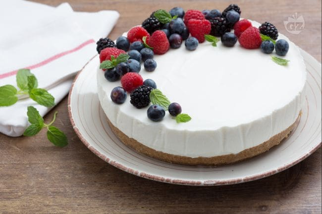

Torta fredda allo yogurt

Description
Facile, veloce fresca e golosa! Vi sembra impossibile che una torta possa essere tutte queste cose insieme? Forse non avete ancora provato la nostra torta fredda allo yogurt, un delicato dessert dal gusto leggero arricchito con succosi frutti di bosco. Che siate esperti in cucina oppure no, non importa, questa delizia si realizza in un lampo e non necessita di forno né fornelli, ed è quindi perfetta per la stagione estiva. La torta fredda allo yogurt diventerà il vostro dolce estivo per eccellenza, divertitevi a testare i più golosi abbinamenti di sapore variando il gusto dello yogurt nella crema e guarnendo la torta con frutta fresca a piacere o una più raffinata coulis, gusterete ogni volta una torta nuova!
Ingredients
Ingredienti per la base
- Biscotti Digestive 280g
- Zucchero di canna 30g
- Burro 170g
Ingredienti per la crema di yogurt
- yogurt bianco naturale cremoso 700g
- Latte intero
- Zucchero a velo
- Gelatina in fogli
- Panna fresca liquida
Steps
- Per realizzare la torta fredda allo yogurt per prima cosa imburrate uno stampo a cerniera del diametro di 20 cm, foderate con carta forno la base e il bordo dello stampo seguendo le indicazioni che trovate nella nostra scheda: come foderare una tortiera con carta forno 2. Sciogliete il burro al microonde oppure in un pentolino e fatelo intiepidire, tenendolo da parte. Intanto versate nel mixer i biscotti secch
- frullateli per ridurli in polvere 4. Trasferite i biscotti sminuzzati in una ciotola, aggiungete lo zucchero di canna 5 e il burro fuso intiepidito 6.
- Mescolate con una spatola per ottenere un composto pastoso 7 e trasferitelo in una tegglia 8; pressatelo bene sul fondo con il dorso di un cucchiaio per realizzare la base 9. Ponete la base in frigorifero e lasciatela rassodare almeno 30 minuti.
- Ora ponete i fogli di gelatina in una ciotola ampia colma di acqua fredda e lasciateli ammorbidire per circa 10 minuti 10. Intanto scaldate il latte in un pentolino (dovrà solo sfiorare il bollore) e una volta che la gelatina sarà ammorbidita, strizzatela e versatela nel latte caldo a fuoco spento 11. Mescolate con una frusta per sciogliere accuratamente la gelatina 12. Tenete da parte per un momento e lasciate che il composto si intiepidisca.
- Ora versate la panna fresca liquida nella ciotola della planetaria dotata di fruste, unite lo zucchero a velo 13 e montatela fino a quando sarà spumosa 14. Se non disponete di una planetarian potete usare anche le fruste elettriche per montare la panna. Versate lo yogurt in una ciotola, aggiungete il latte nel quale avete sciolto la gelatina e che nel frattempo si sarà raffreddato 15.
- Mescolate con una spatola per amalgamare il composto 16 e per finire aggiungete anche la panna che avete precedentemente montato 17, iniziate con un cucchiaio di panna per stemperare il composto mescolando con vigore, poi unite la restante panna mescolando delicatamente dal basso verso l’alto per non smontarla 18.
- Versate la crema ottenuta nello stampo con la base che nel frattempo si sarà rassodata, livellate la superficie con una spatola 20 e riponete nuovamente in frigorifero a rassodare per almeno 5 ore. Una volta che la torta fredda allo yogurt sarà pronta, guarnitela a piacere con i frutti di bosco e servitela 21.